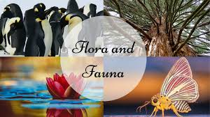

საქართველო

სახელმწიფო ევრაზიაში, კავკასიაში, შავი ზღვის აღმოსავლეთ სანაპიროზე. ესაზღვრება ჩრდილოეთიდან რუსეთი, სამხრეთიდან თურქეთი და სომხეთი, და სამხრეთ-აღმოსავლეთიდან აზერბაიჯანი. ტრანსკონტინენტური ქვეყანა სამხრეთ-აღმოსავლეთ ევროპისა და დასავლეთ აზიის გასაყარზე მდებარეობს, თუმცა სოციოპოლიტიკურად და კულტურულად ევროპის ნაწილია.
ფლორა და ფაუნა
საქართველოს მცენარეთა სამყარო (ფლორა) მდიდარი და მრავალფეროვანია. იგი დაახლოებით 13 300 სახეობას ითვლის, მათ შორის 4225 თესლოვან მცენარეთა რიცხვს მიეკუთვნება, 75 — გვიმრისებურს, 600 — ხავსებს, 650 — ლიქენებს, 5000 — სოკოვნებსა და 2000 — წყალმცენარეებს. საქართველოს ცხოველთა სამყარო (ფაუნა) საკმაოდ მრავალფეროვანია. აქ ცნობილია ძუძუმწოვრების 100-მდე, ფრინველების 330-ზე მეტი, ქვეწარმავლების 48, ამფიბიების 11, თევზების 160-მდე და უხერხემლო ცხოველების ათასობით სახეობა.